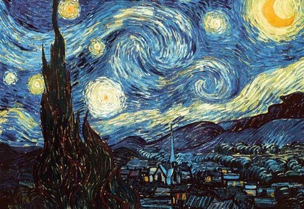

Starrynight
is an oil on canvas painting by Dutch Post-Impressionist painter Vincent van Gogh. Painted in June 1889, it depicts the view from the east-facing window of his asylum room at Saint-Rémy-de-Provence

The Scream
is the popular name given to a composition created by Norwegian Expressionist artist Edvard Munch in 1893. The original German title given by Munch to his work was Der Schrei der Natur (The Scream of Nature)

Girl Before A Mirror
was painted in March 1932. It was produced in the style Picasso was using at the time and evoked an image of Vanity such as had been utilized in art in earlier eras